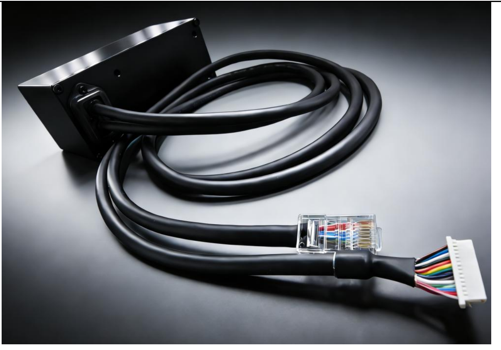
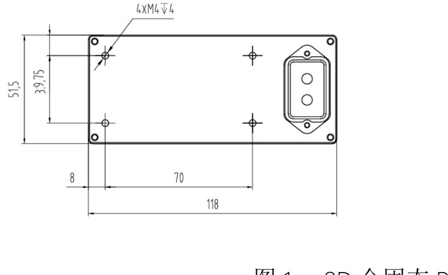

标称最大探测范围
TH-SERIES / RGB-D SENSOR
TH-S02
3D 全固态 RGB-D 激光雷达
基于 dToF 深度方案，集成宽动态 RGB 相机与六轴 IMU；让深度、色彩与运动状态信息，共同进入你的三维感知系统。

01 / OVERVIEW
TH—S02一体化感知，
从深度开始。
TH-S02 是一款 dToF 3D 全固态 RGB-D 激光雷达。设备内部集成 500 万像素宽动态 RGB 相机与 IMU，支持激光点云与 RGB 图像的空间融合，并可输出运动姿态信息。
内容依据《TH-S02 3D全固态RGBD激光雷达产品使用说明书 V1.3》整理。
02 / TECHNICAL SPECIFICATIONS
参数一览
关键工作条件与配置属性一并标注。
具体以正式产品资料与订购配置为准。
LiDAR / RGB 视场角
dToF 深度数据
HDR RGB + 六轴 IMU
说明书标注探测范围 0.5–70 m；30 m @ 10% indoor 为备注条件，实际效果受目标反射率与环境影响。
01
深度感知
LiDAR / dToF- 技术方案
- dToF
- 分辨率
- 256 × 192 px
- 视场角
- 120° × 90°
- 角分辨率
- 0.5°
- 激光波长
- 940 nm ± 15 nm
- 激光安全等级
- Class 1
- 探测范围
- 0.5–70 m
- 探测精度
- ±30 mm @ 1σ
- 帧率
- 10 FPS
02
融合感知
RGB / IMU / SDK- RGB 相机
- 500 万像素
- 图像特性
- HDR · Electronic rolling shutter
- RGB 视场角
- 120° × 90°
- 惯性测量单元
- 6 轴 IMU
- 数据输出
- 激光点云、RGB、IMU
- 软件支持
- Linux/ROS SDK for RGB-D
03
接口与供电
INTERFACE / POWER1× Gigabit Ethernet
单千兆以太网 × 1
Dual Gigabit Ethernet
双千兆以太网
CAN · NPN I/O
CAN 通信预留；NPN input × 2、NPN output × 2
- 供电输入
- DC 14–30 V（推荐 24 V）
- 稳态功耗
- ≤ 10 W
- 通讯接口
- 标准千兆以太网 × 1
04
环境与结构
ENVIRONMENT / BODY- 防护等级
- IP65 标准
- 可选防护
- IP67 可定制
- 工作温度
- −20–65 °C
- 存储温度
- −25–75 °C
- 抗环境光
- 80,000 lx
- 散热方式
- 自然散热
- 外形尺寸
- 118 × 52 × 63 mm
- 重量
- ≤ 700 g
03 / FIELD OF VIEW
120° × 90°
视场示意
通过交互线框观察深度感知视场的空间形态。该视图为几何原理示意，不代表实时实测数据。
水平视场 120°垂直视场 90°
LiDAR / dToF
原理示意，非实时实测数据
04 / MECHANICAL & CONNECTION
结构与连接
以下尺寸与线缆图片整理自产品说明书。
请以实际产品批次及配置为准。

FIG. 01
外形尺寸
118 × 52 × 63 mm
FIG. 02
线缆与接口示意
千兆以太网 / 电源与控制
图示摘录自《TH-S02 3D全固态RGBD激光雷达产品使用说明书 V1.3》；本站展示部分图示，完整说明书暂未提供下载。
EXPLORE / TAIHE
让深度数据
走进真实场景。
继续了解泰合技术的三维感知产品与点云展示。